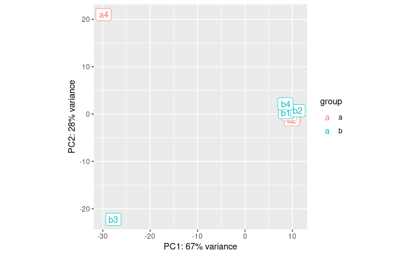
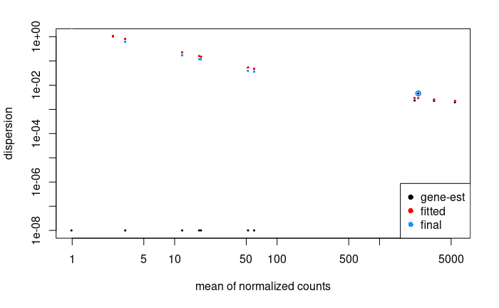
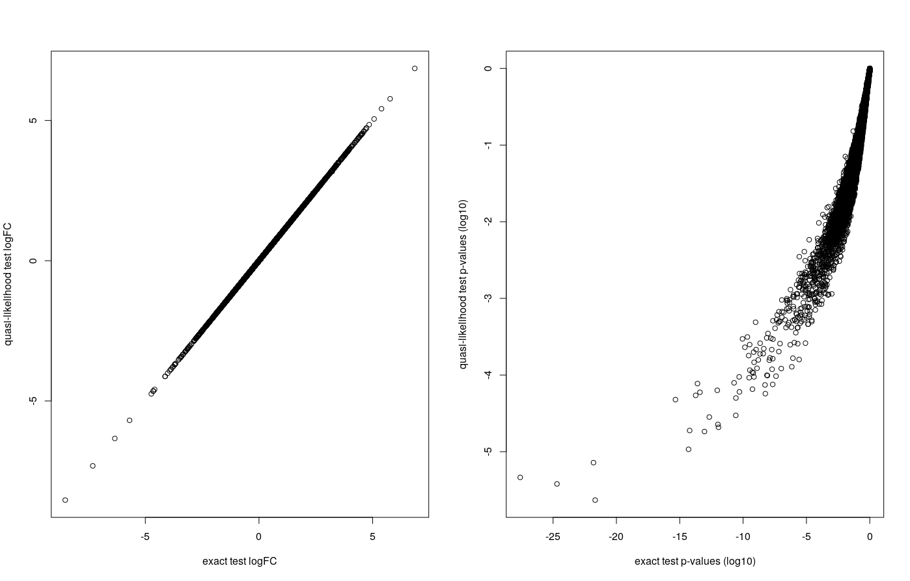

Differential Expression Inference
Once the reads have been mapped and counted, one can assess the differential expression of genes between different conditions.
During this lesson, you will learn to :
- describe the different steps of data normalization and modelling commonly used for RNA-seq data.
- detect significantly differentially-expressed genes using either edgeR or DESeq2.
Material
Connexion to the Rstudio server
Note
This step is intended only for users who attend the course with a teacher. Otherwise you will have to rely on your own installation of Rstudio.
The analysis of the read count data will be done on an RStudio instance, using the R language and some relevant Bioconductor libraries.
As you start your session on the RStudio server, please make sure that you know where your data is situated with respect to your working directory (use getwd() and setwd() to respectively : know what your working directory is, and change it as necessary).
Differential Expression Inference
Let’s analyze the mouseMT toy dataset.
DESeq2 analysis
library(DESeq2)
library(ggplot2)
library(pheatmap)
reading
We will use the trimmed reads
folder = "/shared/data/Solutions/mouseMT/044_STAR_map_trimmed/"
# we skip the 4 first lines, which contains
# N_unmapped , N_multimapping , N_noFeature , N_ambiguous
sample_a1_table = read.table(paste0( folder , "sample_a1" , ".ReadsPerGene.out.tab") ,
row.names = 1 , skip = 4 )
head( sample_a1_table )
V2 V3 V4
ENSMUSG00000064336 0 0 0
ENSMUSG00000064337 0 0 0
ENSMUSG00000064338 0 0 0
ENSMUSG00000064339 0 0 0
ENSMUSG00000064340 0 0 0
ENSMUSG00000064341 4046 1991 2055
We are interested in the first columns, which contains counts for unstranded reads
Let’s use a loop to automatize the reading:
raw_counts = data.frame( row.names = row.names(sample_a1_table) )
for( sample in c('a1','a2','a3','a4','b1','b2','b3','b4') ){
sample_table = read.table(paste0( folder , "sample_" , sample , ".ReadsPerGene.out.tab") ,
row.names = 1 , skip = 4 )
raw_counts[sample] = sample_table[ row.names(raw_counts) , "V2" ]
}
head( raw_counts )
a1 a2 a3 a4 b1 b2 b3 b4
ENSMUSG00000064336 0 0 0 0 0 0 0 0
ENSMUSG00000064337 0 0 0 0 0 0 0 0
ENSMUSG00000064338 0 0 0 0 0 0 0 0
ENSMUSG00000064339 0 0 0 2 0 0 0 0
ENSMUSG00000064340 0 0 0 0 0 0 0 0
ENSMUSG00000064341 4046 4098 4031 1 449 515 13 456
setting up the experimental design
#note: levels let's us define the reference levels
treatment <- factor( c(rep("a",4), rep("b",4)), levels=c("a", "b") )
colData <- data.frame(treatment, row.names = colnames(raw_counts))
colData
treatment
a1 a
a2 a
a3 a
a4 a
b1 b
b2 b
b3 b
b4 b
creating the DESeq data object and some QC
dds <- DESeqDataSetFromMatrix(
countData = raw_counts, colData = colData,
design = ~ treatment)
dim(dds)
[1] 37 8
Filter low count genes.
Here, we will apply a very soft filter and keep genes with at least 1 read in at least 4 samples (size of the smallest group).
idx <- rowSums(counts(dds, normalized=FALSE) >= 1) >= 4
dds.f <- dds[idx, ]
dim(dds.f)
[1] 13 8
We go from 37 to 13 genes
We perform the estimation of dispersions
dds.f <- DESeq(dds.f)
estimating size factors
estimating dispersions
gene-wise dispersion estimates
mean-dispersion relationship
-- note: fitType='parametric', but the dispersion trend was not well captured by the
function: y = a/x + b, and a local regression fit was automatically substituted.
specify fitType='local' or 'mean' to avoid this message next time.
final dispersion estimates
fitting model and testing
PCA plot of the samples:
# blind : whether to blind the transformation to the experimental design.
# - blind=TRUE : comparing samples in a manner unbiased by prior information on samples,
# for example to perform sample QA (quality assurance).
# - blind=FALSE: should be used for transforming data for downstream analysis,
# where the full use of the design information should be made.
vsd <- varianceStabilizingTransformation(dds.f, blind=TRUE )
pcaData <- plotPCA(vsd, intgroup=c("treatment"))
pcaData + geom_label(aes(x=PC1,y=PC2,label=name))

OK, so a4 and b3 are quite different from the rest.
- a4 was expected from the QC
- b3 we did not expect until now
If we did the analysis with them, here is what we get:
res <- results(dds.f)
summary( res )
out of 13 with nonzero total read count
adjusted p-value < 0.1
LFC > 0 (up) : 0, 0%
LFC < 0 (down) : 0, 0%
outliers [1] : 7, 54%
low counts [2] : 0, 0%
(mean count < 16)
[1] see 'cooksCutoff' argument of ?results
[2] see 'independentFiltering' argument of ?results
So, let’s eliminate these two samples.
analysis without the outliers
raw_counts_no_outliers = raw_counts[ , !( colnames(raw_counts) %in% c('a4','b3') ) ]
treatment <- factor( c(rep("a",3), rep("b",3)), levels=c("a", "b") )
colData <- data.frame(treatment, row.names = colnames(raw_counts_no_outliers))
colData
treatment
a1 a
a2 a
a3 a
b1 b
b2 b
b4 b
dds <- DESeqDataSetFromMatrix(
countData = raw_counts_no_outliers, colData = colData,
design = ~ treatment)
dim(dds)
[1] 37 6
Filter low count genes: now the smallest group is 3
idx <- rowSums(counts(dds, normalized=FALSE) >= 1) >= 3
dds.f <- dds[idx, ]
dim(dds.f)
[1] 12 6
We perform the estimation of dispersions
dds.f <- DESeq(dds.f)
estimating size factors
estimating dispersions
gene-wise dispersion estimates
mean-dispersion relationship
final dispersion estimates
fitting model and testing
PCA plot of the samples:
vsd <- varianceStabilizingTransformation(dds.f, blind=TRUE )
pcaData <- plotPCA(vsd, intgroup=c("treatment"))
pcaData + geom_label(aes(x=PC1,y=PC2,label=name))
It looks much better. Seems like PC1 captures the group effect
We plot the estimate of the dispersions
# * black dot : raw
# * red dot : local trend
# * blue : corrected
plotDispEsts(dds.f)

There is so few genes that this does not look super nice here
For the Ruhland2016 dataset it looks like:

This plot is not easy to interpret. It represents the amount of dispersion at different levels of expression. It is directly linked to our ability to detect differential expression.
Here it looks about normal compared to typical bulk RNA-seq experiments : the dispersion is comparatively larger for lowly-expressed genes.
# extracting results for the treatment versus control contrast
res <- results(dds.f)
summary( res )
out of 12 with nonzero total read count
adjusted p-value < 0.1
LFC > 0 (up) : 1, 8.3%
LFC < 0 (down) : 2, 17%
outliers [1] : 0, 0%
low counts [2] : 0, 0%
(mean count < 1)
[1] see 'cooksCutoff' argument of ?results
[2] see 'independentFiltering' argument of ?results
We can have a look at the coefficients of this model
head(coef(dds.f)) # the second column corresponds to the difference between the 2 conditions
Intercept treatment_b_vs_a
ENSMUSG00000064341 12.084282 -3.33601412
ENSMUSG00000064345 6.112479 -0.99101369
ENSMUSG00000064351 3.757967 0.64546475
ENSMUSG00000064354 10.209339 1.44160442
ENSMUSG00000064357 11.763707 -0.06245774
ENSMUSG00000064358 6.026334 -0.26447858
Here, it contains an intercept and a coefficient for the difference between the two groups.
MA plot:
res.lfc <- lfcShrink(dds.f, coef=2, res=res)
DESeq2::plotMA(res.lfc)
Volcano plot:
FDRthreshold = 0.01
logFCthreshold = 1.0
# add a column of NAs
res.lfc$diffexpressed <- "NO"
# if log2Foldchange > 1 and pvalue < 0.01, set as "UP"
res.lfc$diffexpressed[res.lfc$log2FoldChange > logFCthreshold & res.lfc$padj < FDRthreshold] <- "UP"
# if log2Foldchange < 1 and pvalue < 0.01, set as "DOWN"
res.lfc$diffexpressed[res.lfc$log2FoldChange < -logFCthreshold & res.lfc$padj < FDRthreshold] <- "DOWN"
ggplot( data = data.frame( res.lfc ) , aes( x=log2FoldChange , y = -log10(padj) , col =diffexpressed ) ) +
geom_point() +
geom_vline(xintercept=c(-logFCthreshold, logFCthreshold), col="red") +
geom_hline(yintercept=-log10(FDRthreshold), col="red") +
scale_color_manual(values=c("blue", "grey", "red"))
table(res.lfc$diffexpressed)
DOWN NO UP
1 10 1
Heatmap:
vsd.counts <- assay(vsd)
topVarGenes <- head(order(rowVars(vsd.counts), decreasing = TRUE), 20)
mat <- vsd.counts[ topVarGenes, ] #scaled counts of the top genes
mat <- mat - rowMeans(mat) # centering
pheatmap(mat)
saving results to file
note: a CSV file can be imported into Excel
write.csv( res ,'mouseMT.DESeq2.results.csv' )
edgeR analysis
# setup
library(edgeR)
library(ggplot2)
reading
We will use the trimmed reads
First we try with the sample_a1:
folder = "/shared/data/Solutions/mouseMT/044_STAR_map_trimmed/"
# we skip the 4 first lines, which contains
# N_unmapped , N_multimapping , N_noFeature , N_ambiguous
sample_a1_table = read.table(paste0( folder , "sample_a1" , ".ReadsPerGene.out.tab") ,
row.names = 1 , skip = 4 )
head( sample_a1_table )
V2 V3 V4
ENSMUSG00000064336 0 0 0
ENSMUSG00000064337 0 0 0
ENSMUSG00000064338 0 0 0
ENSMUSG00000064339 0 0 0
ENSMUSG00000064340 0 0 0
ENSMUSG00000064341 4046 1991 2055
We are interested in the first columns, which contains counts for unstranded reads
Let’s use a loop to automatize the reading:
raw_counts = data.frame( row.names = row.names(sample_a1_table) )
for( sample in c('a1','a2','a3','a4','b1','b2','b3','b4') ){
sample_table = read.table(paste0( folder , "sample_" , sample , ".ReadsPerGene.out.tab") ,
row.names = 1 , skip = 4 )
raw_counts[sample] = sample_table[ row.names(raw_counts) , "V2" ]
}
head( raw_counts )
a1 a2 a3 a4 b1 b2 b3 b4
ENSMUSG00000064336 0 0 0 0 0 0 0 0
ENSMUSG00000064337 0 0 0 0 0 0 0 0
ENSMUSG00000064338 0 0 0 0 0 0 0 0
ENSMUSG00000064339 0 0 0 2 0 0 0 0
ENSMUSG00000064340 0 0 0 0 0 0 0 0
ENSMUSG00000064341 4046 4098 4031 1 449 515 13 456
experimental design
note: levels lets us define the reference levels
treatment <- factor( c(rep("a",4), rep("b",4)), levels=c("a", "b") )
names(treatment) = colnames(raw_counts)
treatment
a1 a2 a3 a4 b1 b2 b3 b4
a a a a b b b b
Levels: a b
edgeR object preprocessing and QC
Creating the edgeR DGE object and filtering low-count genes.
dge.all <- DGEList(counts = raw_counts , group = treatment)
dge.f.design <- model.matrix(~ treatment)
# filtering by expression level. See ?filterByExpr for details
keep <- filterByExpr(dge.all)
dge.f <- dge.all[keep, keep.lib.sizes=FALSE]
table( keep )
keep
FALSE TRUE
28 9
#normalization
dge.f <- calcNormFactors(dge.f)
dge.f$samples
group lib.size norm.factors
a1 a 13799 1.2101311
a2 a 13649 1.2130900
a3 a 13938 1.2131513
a4 a 6831 0.1058474
b1 b 13703 1.3614563
b2 b 13627 1.3728761
b3 b 162 2.0759281
b4 b 13687 1.3671996
plotMDS( dge.f , col = c('cornflowerblue','forestgreen')[treatment] )
OK, so a4 and b3 are quite different from the rest.
- a4 was expected from the QC
- b3 we did not expect until now
If we did the analysis with them, here is what we get:
# estimate of the dispersion
dge.f <- estimateDisp(dge.f,dge.f.design , robust = T)
# testing for differential expression.
dge.f.et <- exactTest(dge.f)
topTags(dge.f.et)
logFC logCPM PValue FDR
ENSMUSG00000065947 -5.06512022 13.51727 0.006432974 0.05110489
ENSMUSG00000064351 -7.46603064 20.14951 0.011356643 0.05110489
ENSMUSG00000064345 3.35236454 15.28962 0.050902734 0.13212506
ENSMUSG00000064341 -2.67947447 16.69126 0.058722251 0.13212506
ENSMUSG00000064354 1.58127747 16.60293 0.263189690 0.42743645
ENSMUSG00000064368 1.75395362 12.51557 0.284957631 0.42743645
ENSMUSG00000064358 -0.10554311 11.49478 0.912516094 0.96610797
ENSMUSG00000064363 -0.08216781 17.90743 0.950808801 0.96610797
ENSMUSG00000064357 0.06455233 17.18842 0.966107973 0.96610797
no gene is significantly DE.
So, let’s eliminate these two samples.
analysis without the outliers
raw_counts_no_outliers = raw_counts[ , !( colnames(raw_counts) %in% c('a4','b3') ) ]
head( raw_counts_no_outliers )
a1 a2 a3 b1 b2 b4
ENSMUSG00000064336 0 0 0 0 0 0
ENSMUSG00000064337 0 0 0 0 0 0
ENSMUSG00000064338 0 0 0 0 0 0
ENSMUSG00000064339 0 0 0 0 0 0
ENSMUSG00000064340 0 0 0 0 0 0
ENSMUSG00000064341 4046 4098 4031 449 515 456
treatment <- factor( c(rep("a",3), rep("b",3)), levels=c("a", "b") )
colData <- data.frame(treatment, row.names = colnames(raw_counts_no_outliers))
colData
treatment
a1 a
a2 a
a3 a
b1 b
b2 b
b4 b
dge.all <- DGEList(counts = raw_counts_no_outliers , group = treatment)
dge.f.design <- model.matrix(~ treatment)
# filtering by expression level. See ?filterByExpr for details
keep <- filterByExpr(dge.all)
dge.f <- dge.all[keep, keep.lib.sizes=FALSE]
table( keep )
keep
FALSE TRUE
28 9
We compute the normalization factor for each library:
#normalization
dge.f <- calcNormFactors(dge.f)
dge.f$samples
group lib.size norm.factors
a1 a 13799 0.9437444
a2 a 13649 0.9277668
a3 a 13938 0.9412032
b1 b 13703 1.0672149
b2 b 13627 1.0651230
b4 b 13687 1.0675095
We represent the distances between the samples using MDS:
plotMDS( dge.f , col = c('cornflowerblue','forestgreen')[treatment] )
It looks much better. Seems like PC1 captures the group effect.
We now fit the model:
# estimate of the dispersion
dge.f <- estimateDisp(dge.f,dge.f.design , robust = T)
plotBCV(dge.f)
There are so few genes that this does not look super nice here.
Here is how it looks like on the Ruhland2016 data:

This plot is not easy to interpret. It represents the amount of biological variation at different levels of expression. It is directly linked to our ability to detect differential expression.
Here it looks about normal compared to other bulk RNA-seq experiments : the variation is comparatively larger for lowly expressed genes.
# testing for differential expression.
# This method is recommended when you only have 2 groups to compare
dge.f.et <- exactTest(dge.f)
topTags(dge.f.et) # printing the genes where the p-value of differential expression if the lowest
logFC logCPM PValue FDR
ENSMUSG00000064341 -3.2728209590 17.34360 0.000000e+00 0.000000e+00
ENSMUSG00000064354 1.5046106466 17.35950 0.000000e+00 0.000000e+00
ENSMUSG00000064345 -0.9251244495 11.92467 4.542291e-08 1.362687e-07
ENSMUSG00000064368 0.7262191019 10.55226 1.337410e-02 3.009174e-02
ENSMUSG00000064351 0.7031516899 10.50496 2.006905e-02 3.612429e-02
ENSMUSG00000064358 -0.1964770294 12.14888 2.110506e-01 3.165759e-01
ENSMUSG00000065947 0.2623477474 10.00748 4.831813e-01 5.851717e-01
ENSMUSG00000064363 -0.0127783014 18.61543 5.201527e-01 5.851717e-01
ENSMUSG00000064357 0.0006819028 17.93963 9.833826e-01 9.833826e-01
We can see 3 genes with FDR < 0.01 and 2 others with 0.01 < FDR < 0.05.
summary(decideTests(dge.f.et , p.value = 0.01)) # let's use 0.01 as a threshold
b-a
Down 2
NotSig 6
Up 1
Let’s plot these:
## plot all the logFCs versus average count size. Significantly DE genes are colored
plotMD(dge.f.et)
# lines at a log2FC of 1/-1, corresponding to a shift in expression of x2
abline(h=c(-1,1), col="blue")
abline(h=c(0), col="grey")
Volcano plot
allGenes = topTags(dge.f.et , n = nrow(dge.f.et$table) )$table
FDRthreshold = 0.01
logFCthreshold = 1.0
# add a column of NAs
allGenes$diffexpressed <- "NO"
# if log2Foldchange > 1 and pvalue < 0.01, set as "UP"
allGenes$diffexpressed[allGenes$logFC > logFCthreshold & allGenes$FDR < FDRthreshold] <- "UP"
# if log2Foldchange < 1 and pvalue < 0.01, set as "DOWN"
allGenes$diffexpressed[allGenes$logFC < -logFCthreshold & allGenes$FDR < FDRthreshold] <- "DOWN"
ggplot( data = allGenes , aes( x=logFC , y = -log10(FDR) , col =diffexpressed ) ) +
geom_point() +
geom_vline(xintercept=c(-logFCthreshold, logFCthreshold), col="red") +
geom_hline(yintercept=-log10(FDRthreshold), col="red") +
scale_color_manual(values=c("blue", "grey", "red"))
writing the table of results
write.csv( allGenes , 'mouseMT.edgeR.results.csv')
From ensembl gene ids to gene names
We can convert between different gene ids using the bitr function from clusterProfiler
library(clusterProfiler)
library(org.Mm.eg.db)
genes_universe <- bitr(rownames(allGenes), fromType = "ENSEMBL",
toType = c("ENTREZID", "SYMBOL"),
OrgDb = "org.Mm.eg.db")
genes_universe
ENSEMBL ENTREZID SYMBOL
1 ENSMUSG00000064341 17716 ND1
2 ENSMUSG00000064354 17709 COX2
3 ENSMUSG00000064345 17717 ND2
4 ENSMUSG00000064368 17722 ND6
5 ENSMUSG00000064351 17708 COX1
6 ENSMUSG00000064358 17710 COX3
7 ENSMUSG00000065947 17720 ND4L
8 ENSMUSG00000064363 17719 ND4
9 ENSMUSG00000064357 17705 ATP6
Here is the list of orgDb packages. For non-model organisms it will be more complex.
Differential Expression - Task
Use either edgeR or DESeq2 to conduct a differential expression analysis.
You may play with either of the following datasets:
- Ruhland2016
- simple 1 factor design
/shared/data/Solutions/Ruhland2016/countFiles/featureCounts_Ruhland2016.counts.txt- Ruhland2016 count matrix
- the Liu2015 dataset:
- simple 1 factor design
/shared/data/Solutions/Liu2015/countFiles/featureCounts_Liu2015.counts.txt- Liu2015 count matrix
- Tuch 2010 dataset
- 2 factors design : 3 patients (8, 33, and 51) each had 1 sample from tumor tissue (T) and normal tissue (N) sequenced.
- the goal is to find the difference between tumor and normal while taking the patient into account.
/shared/data/Solutions/Tuch2010/Tuch_et_al_2010_counts.csv- Tuch 2010 count matrix
Note
- Generally, users find the syntax and workflow of DESeq2 easier for getting started.
- If you have the time, conduct a differential expression analysis using both DESeq2 and edgeR.
-
Follow the vignettes/user’s guide! They are the most up-to-date documents, and generally contain everything a newcomer might need, including worked-out examples.
-
when dealing with more than one factor, you will need a model matrix to specify the experimental design to the library, and to craft your contrasts of interest. The ExploreModelMatrix package may help you a lot in that regard.
Ruhland2016 - DESeq2 correction
read in the data
# setup
library(DESeq2)
library(ggplot2)
# reading the counts files - adapt the file path to your situation
raw_counts <-read.table('/shared/data/Solutions/Ruhland2016/countFiles/featureCounts_Ruhland2016.counts.txt' ,
skip=1 , sep="\t" , header=T)
# setting up row names as ensembl gene ids
row.names(raw_counts) = raw_counts$Geneid
## looking at the beginning of that table
raw_counts[1:5,1:5]
# removing these first columns to keep only the sample counts
raw_counts = raw_counts[ , -1:-6 ]
# changing column names
names( raw_counts) = gsub('_.*', '', gsub('.*.SRR[0-9]{7}_', '', names(raw_counts) ) )
# some checking of what we just read
head(raw_counts); tail(raw_counts); dim(raw_counts)
colSums(raw_counts) # total number of counted reads per sample
preprocessing
## telling DESeq2 what the experimental design was
# note: by default, the 1st level is considered to be the reference/control/WT/...
treatment <- factor( c(rep("EtOH",3), rep("TAM",3)), levels=c("EtOH", "TAM") )
colData <- data.frame(treatment, row.names = colnames(raw_counts))
colData
## creating the DESeq data object & positing the model
dds <- DESeqDataSetFromMatrix(
countData = raw_counts, colData = colData,
design = ~ treatment)
dim(dds)
## filter low count genes. Here, only keep genes with at least 2 samples where there are at least 5 reads.
idx <- rowSums(counts(dds, normalized=FALSE) >= 5) >= 2
dds.f <- dds[idx, ]
dim(dds.f)
# we go from 55414 to 19378 genes
Around 19k genes pass our minimum expression threshold, quite typical for a bulk Mouse RNA-seq experiment.
estimate dispersion / model fitting
# we perform the estimation of dispersions
dds.f <- DESeq(dds.f)
# we plot the estimate of the dispersions
# * black dot : raw
# * red dot : local trend
# * blue : corrected
plotDispEsts(dds.f)
# extracting results for the treatment versus control contrast
res <- results(dds.f)
This plot is not easy to interpret. It represents the amount of dispersion at different levels of expression. It is directly linked to our ability to detect differential expression.
Here it looks about normal compared to typical bulk RNA-seq experiments : the dispersion is comparatively larger for lowly expressed genes.
looking at the results
# adds estimate of the LFC the results table.
# This shrunk logFC estimate is more robust than the raw value
head(coef(dds.f)) # the second column corresponds to the difference between the 2 conditions
res.lfc <- lfcShrink(dds.f, coef=2, res=res)
#plotting to see the difference.
par(mfrow=c(2,1))
DESeq2::plotMA(res)
DESeq2::plotMA(res.lfc)
# -> with shrinkage, the significativeness and logFC are more consistent
par(mfrow=c(1,1))

Without the shrinkage, we can see that for low counts we can see a high log-fold change but non significant (ie. we see a large difference but with variance is also so high that this observation may be due to chance only).
The shrinkage corrects this and the relationship between logFC and significance is smoother.
# we apply the variance stabilising transformation to make the read counts comparable across libraries
# (nb : this is not needed for DESeq DE analysis, but rather for visualisations that compare expression across samples, such as PCA. This replaces normal PCA scaling)
vst.dds.f <- vst(dds.f, blind = FALSE)
vst.dds.f.counts <- assay(vst.dds.f)
plotPCA(vst.dds.f, intgroup = c("treatment"))

The first axis (58% of the variance) seems linked to the grouping of interest.
## ggplot2-based volcano plot
library(ggplot2)
FDRthreshold = 0.01
logFCthreshold = 1.0
# add a column of NAs
res.lfc$diffexpressed <- "NO"
# if log2Foldchange > 1 and pvalue < 0.01, set as "UP"
res.lfc$diffexpressed[res.lfc$log2FoldChange > logFCthreshold & res.lfc$padj < FDRthreshold] <- "UP"
# if log2Foldchange < 1 and pvalue < 0.01, set as "DOWN"
res.lfc$diffexpressed[res.lfc$log2FoldChange < -logFCthreshold & res.lfc$padj < FDRthreshold] <- "DOWN"
ggplot( data = data.frame( res.lfc ) , aes( x=log2FoldChange , y = -log10(padj) , col =diffexpressed ) ) +
geom_point() +
geom_vline(xintercept=c(-logFCthreshold, logFCthreshold), col="red") +
geom_hline(yintercept=-log10(FDRthreshold), col="red") +
scale_color_manual(values=c("blue", "grey", "red"))
table(res.lfc$diffexpressed)
DOWN NO UP
131 19002 245

library(pheatmap)
topVarGenes <- head(order(rowVars(vst.dds.f.counts), decreasing = TRUE), 20)
mat <- vst.dds.f.counts[ topVarGenes, ] #scaled counts of the top genes
mat <- mat - rowMeans(mat) # centering
pheatmap(mat)

# saving results to file
# note: a CSV file can be imported into Excel
write.csv( res ,'Ruhland2016.DESeq2.results.csv' )
Ruhland2016 - EdgeR correction
read in the data
library(edgeR)
library(ggplot2)
# reading the counts files - adapt the file path to your situation
raw_counts <- read.table('.../Ruhland2016_featureCount_result.counts' ,
skip=1 , sep="\t" , header=T)
# setting up row names as ensembl gene ids
row.names(raw_counts) = raw_counts$Geneid
# removing these first columns to keep only the sample counts
raw_counts = raw_counts[ , -1:-6 ]
# changing column names
names( raw_counts) = gsub('_.*', '', gsub('.*.SRR[0-9]{7}_', '', names(raw_counts) ) )
# some checking of what we just read
head(raw_counts); tail(raw_counts); dim(raw_counts)
colSums(raw_counts) # total number of counted reads per sample
edgeR object preprocessing
# setting up the experimental design AND the model
# -> the first 3 samples form a group, the 3 remaining are the other group
treatment <- c(rep("EtOH",3), rep("TAM",3))
dge.f.design <- model.matrix(~ treatment)
# creating the edgeR DGE object
dge.all <- DGEList(counts = raw_counts , group = treatment)
# filtering by expression level. See ?filterByExpr for details
keep <- filterByExpr(dge.all)
dge.f <- dge.all[keep, keep.lib.sizes=FALSE]
table( keep )
keep
FALSE TRUE
39702 15712
Around 16k genes are sufficiently expressed to be retained.
#normalization
dge.f <- calcNormFactors(dge.f)
dge.f$samples
Each sample has been associated with a normalization factor.
edgeR model fitting
# estimate of the dispersion
dge.f <- estimateDisp(dge.f,dge.f.design , robust = T)
plotBCV(dge.f)
This plot is not easy to interpret. It represents the amount of biological variation at different levels of expression. It is directly linked to our ability to detect differential expression.
Here it looks about normal compared to other bulk RNA-seq experiments : the variation is comparatively larger for lowly expressed genes.
# testing for differential expression.
# This method is recommended when you only have 2 groups to compare
dge.f.et <- exactTest(dge.f)
topTags(dge.f.et) # printing the genes where the p-value of differential expression if the lowest
Comparison of groups: TAM-EtOH
logFC logCPM PValue FDR
ENSMUSG00000050272 -8.522762 4.988067 2.554513e-28 3.851950e-24
ENSMUSG00000075014 3.890079 5.175181 2.036909e-25 1.535728e-21
ENSMUSG00000009185 3.837786 6.742422 1.553964e-22 7.810743e-19
ENSMUSG00000075015 3.778523 3.274463 2.106799e-22 7.942107e-19
ENSMUSG00000028339 -5.692069 6.372980 4.593720e-16 1.385374e-12
ENSMUSG00000040111 -2.141221 6.771538 4.954522e-15 1.245154e-11
ENSMUSG00000041695 4.123972 1.668247 6.057909e-15 1.304960e-11
ENSMUSG00000072941 3.609170 7.080257 1.807618e-14 3.407135e-11
ENSMUSG00000000120 -6.340146 6.351489 2.507019e-14 4.200371e-11
ENSMUSG00000034981 3.727969 5.244841 3.934957e-14 5.933521e-11
# see how many genes are DE
summary(decideTests(dge.f.et , p.value = 0.01)) # let's use 0.01 as a threshold
TAM-EtOH
Down 109
NotSig 15393
Up 210
The comparison is TAM-EtOH, so “Up”, corresponds to a higher in group TAM compared to group EtOH.
edgeR looking at differentially-expressed genes
## plot all the logFCs versus average count size. Significantly DE genes are colored
par(mfrow=c(1,1))
plotMD(dge.f.et)
# lines at a log2FC of 1/-1, corresponding to a shift in expression of x2
abline(h=c(-1,1), col="blue")

## Volcano plot
allGenes = topTags(dge.f.et , n = nrow(dge.f.et$table) )$table
FDRthreshold = 0.01
logFCthreshold = 1.0
# add a column of NAs
allGenes$diffexpressed <- "NO"
# if log2Foldchange > 1 and pvalue < 0.01, set as "UP"
allGenes$diffexpressed[allGenes$logFC > logFCthreshold & allGenes$FDR < FDRthreshold] <- "UP"
# if log2Foldchange < 1 and pvalue < 0.01, set as "DOWN"
allGenes$diffexpressed[allGenes$logFC < -logFCthreshold & allGenes$FDR < FDRthreshold] <- "DOWN"
ggplot( data = allGenes , aes( x=logFC , y = -log10(FDR) , col =diffexpressed ) ) +
geom_point() +
geom_vline(xintercept=c(-logFCthreshold, logFCthreshold), col="red") +
geom_hline(yintercept=-log10(FDRthreshold), col="red") +
scale_color_manual(values=c("blue", "grey", "red"))
## writing the table of results
write.csv( allGenes , 'Ruhland2016.edgeR.results.csv')
edgeR extra stuff
# how to extract log CPM
logcpm <- cpm(dge.f, prior.count=2, log=TRUE)
# there is another fitting method reliying on quasi-likelihood, which is useful when the model is more complex (ie. more than 1 factor with 2 levels)
dge.f.QLfit <- glmQLFit(dge.f, dge.f.design)
dge.f.qlt <- glmQLFTest(dge.f.QLfit, coef=2)
# you can see the results are relatively different. The order of genes changes a bit, and the p-values are more profoundly affected
topTags(dge.f.et)
topTags(dge.f.qlt)
## let's see how much the two methods agree:
par(mfrow=c(1,2))
plot( dge.f.et$table$logFC ,
dge.f.qlt$table$logFC,
xlab = 'exact test logFC',
ylab = 'quasi-likelihood test logFC')
print( paste('logFC pearson correlation coefficient :' ,
cor(dge.f.et$table$logFC ,dge.f.qlt$table$logFC) ) )
plot( log10(dge.f.et$table$PValue ),
log10(dge.f.qlt$table$PValue) ,
xlab = 'exact test p-values (log10)',
ylab = 'quasi-likelihood test p-values (log10)')
print( paste( "P-values spearman correlation coefficient",
cor( log10(dge.f.et$table$PValue ), log10(dge.f.qlt$table$PValue) , method = 'spearman' )))
"logFC pearson correlation coefficient : 0.999997655536736"
"P-values spearman correlation coefficient 0.993238670517236"

The logFC are highly correlated. FDRs show less correlation but their ranks are highly correlated : they come in a very similar order.
Tuch 2010 - EdgeR correction
We refer you here to section 4.1 of edgeR’s vignette.
Additional : importing counts from salmon with tximport
The tximport R packages offers a fairly simple set of functions to get transcript-level expression quantification from salmon or kallisto into a differential gene expression analysis.
Task : import salmon transcript-level quantification in R in order to perform a DE analysis on it using either edgeR or DESeq2. Additional: compare the results with the ones obtained from STAR-aligned reads.
- The tximport vignette is a very good guide for this task.
- If you have not computed them, you can find files with expression quantifications in :
/shared/data/Solutions/Liu2015/and/shared/data/Solutions/Ruhland2016/